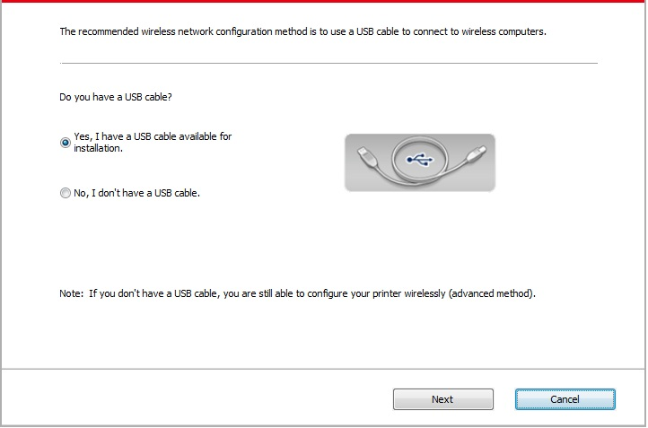
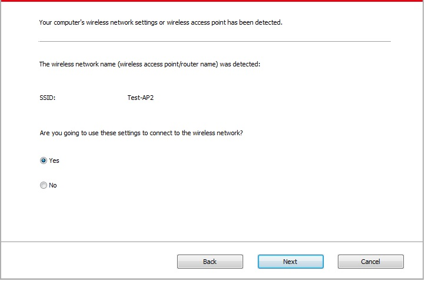
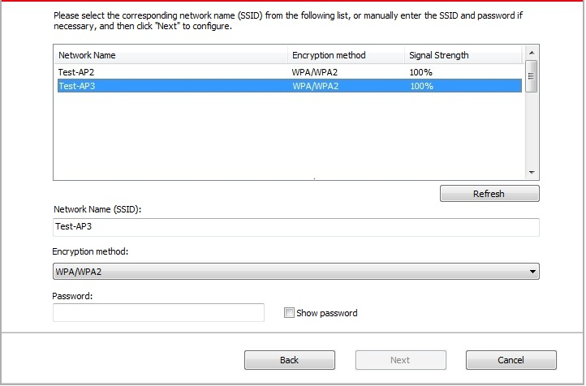
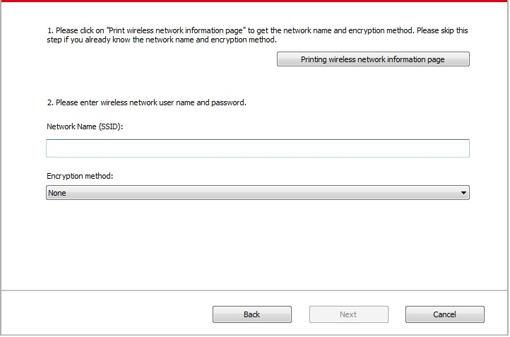
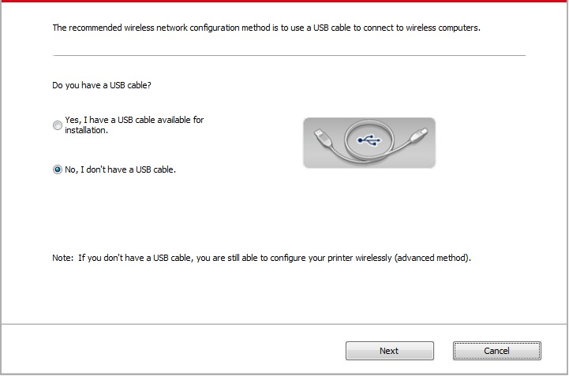
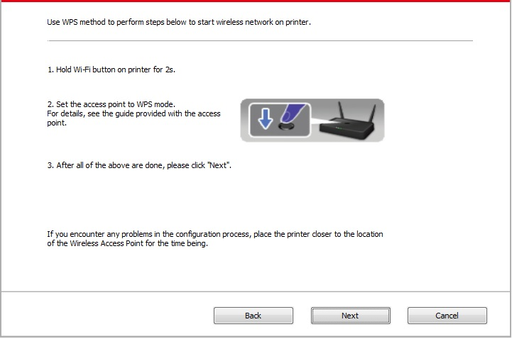
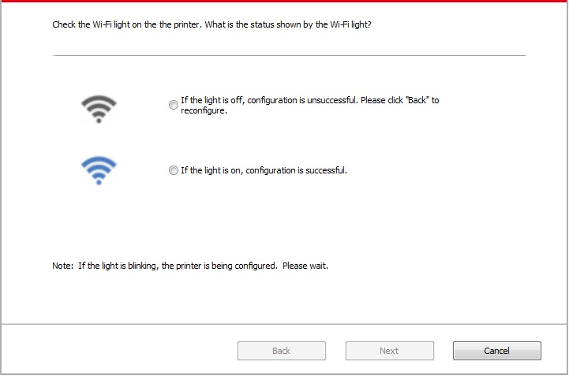

5.Wireless network setup (applicable to Wi-Fi models)
Depending on model, the printer with Wi-Fi printing function supports the two types of wireless network connection of both infrastructure connection mode and Soft-AP, while there is usually only one connection between computer and printer at a time. If you have problems during wireless network setup, please refer to Chapter 5.3 Wireless Network Setup Frequently Asked Questions.
 |
Basic structure mode: connecting to a wireless device via router 1. Access point (wireless router) 2. Wireless network printer 3. Computer connecting to access point via wireless network 4. Computer connecting to access point via network cable |
|
|
Soft-AP The wireless computer is directly connected to the wireless device. |

5.1.Basic structure mode
You can connect a computer to your printer via access point (wireless router) as the medium. Access point (wireless router) connection is divided into wireless network setup and Wi-Fi Protected Setup (WPS).
Important: Before wireless network installation, you must learn about the service set identifier (SSID) and password of your access point in order to use them during wireless network setup. If they cannot be determined, please consult your network administrator or access point (wireless router) manufacturer.
5.1.1.Wireless network setup tools
If your computer has been installed with a driver and had been connected to wireless network, but the wireless network was changed, you can set it again with wireless network setup tools.
5.1.1.1.Preliminary preparations
1. Access point (wireless router).
2. A computer that has been connected to network.
3. A printer that has wireless network function.
5.1.1.2.Setup methods of wireless network setup tools
1. Take the wireless network setup tool in computer.
1) Windows system: Click the “Start menu” – “All programs” - “Pantum”－ Product name – “Wireless network setup tool”.
2) Mac system: click "Go" - "Applications" - "Pantum" - "Utilities" - "Wireless Network Configuration Tool" on the computer Finder menu bar.
2. Use USB cable to connect and configure. Select "Yes, I have an USB cable that can be used for installation" in the following interface. Click "Next".

2.1 The computer has been connected to wireless network.
1) The currently wireless network currently connected to computer is selected as wireless network configuration tool by default. Complete configuration according to interface prompt.

 |
Note： |
• The SSID you selected should be consistent with the SSID of access point (wireless router) connected to your computer. |
2) Please tick “No” to configure other wireless network needed to connect to. Complete configuration according to interface prompt.

|
Note： |
• At present, the printer supports 3 types of safe modes: none, WEP and WPA/WPA2. 1) None: There is no encryption method used. 2) WEP: Send and receive data via security key by using WEP (Wired Equivalent Privacy). WEP key is applicable to 64-digit and 128-digit encrypted network and can contain numbers and letters at the same time. 3) WPA/WPA2: it is the pre-shared key (PSK) of Wi-Fi protected access which connects wireless device and access point via TKIP or AES encryption (WPS-Personal). The working length of WPA/WPA2 is within the PSK of 8-63 characters. • The display password is not ticked by default; if it is ticked, all passwords input can be seen in clear text. |
2.2 The computer is not connected to wireless network Input the SSID (case sensitive) and password of access point (wireless router) in the interface below. Complete configuration according to interface prompt.

|
Note： |
• If you do not know the SSID of access point (wireless router), please click “Print Wireless Network Information Page” to view the SSID of the needed access point (wireless router). • If the printer cannot be used normally after wireless network setup is finished, please install the drive again. |
3. Use WPS connection .
Select “No, I don't have a USB cable” in the interface below and then click “Next”.

1) Use WPS method to perform steps below to start wireless network on printer. (Please refer to Chapter 5.1.2 for detailed WPS configuration)

2) Judge if the printer is successfully connected according to the status of Wi-Fi indicator on printer. If configuration failed, please click “Previous” to configure again; if configuration succeeded, please click “Done” to complete configuration.

|
Note： |
• If the printer cannot be used normally after wireless network setup is finished, please install the drive again. |
5.1.2.Wi-Fi Protected Setup (WPS) setup
If the access point (wireless router) supports Wi-Fi Protected Setup (WPS), the Wi-Fi key on the control panel of printer and WPS key on access point (wireless router) can be pressed in order to connect the printer to wireless network.
5.1.2.1.Preliminary preparations
1. The access point (wireless router) supports Wi-Fi Protected Setup (WPS).
2. A printer that has wireless network function.
5.1.2.2.Wi-Fi Protected Setup (WPS) method
1. Turn on the power of printer and access point (wireless router).
2. Make sure the printer is in ready state.
|
Note： |
• If the printer is in sleep mode, it can be woken up by pressing any key on the control panel of printer. |
3. Press the “Wi-Fi key” on the control panel of printer for more than 2s until the blue Wi-Fi indicator of printer blinks, and then release pressing.
4. Press the WPS key on access point (wireless router) within 2min and then release it.
5. When the access point (wireless router) and printer start to connect, the blue Wi-Fi indicator of printer starts to blink. The blue Wi-Fi indicator of printer will be normally on after successful connection.
If the connection is not established after more than 2min, the printer will return to its ready state, the Wi-Fi indicator will be off and Wi-Fi Protected Setup (WPS) connection will fail. If it is needed to connect again, please repeat steps 3-4 above.
|
Note： |
• After successful Wi-Fi Protected Setup (WPS) connection, please install a driver if you want to print via wireless network. |
5.1.3.How to disable the Wi-Fi network connected
Please complete the wireless network connection in infrastructure mode according to above steps. If connected, the Wi-Fi indicator on the status control panel will be always on; now if you want to disconnect it, please press and hold this key for more than 2 seconds (the Wi-Fi indicator will be off ).
5.2.Wi-Fi hotspot mode
You can establish a connection between a wireless network-enabled computer and a wireless network-enabled printer without using an access point (wireless route).
5.2.1.Preliminary preparations
1.Printer with Wi-Fi hotspot function.
2.Computer with wireless network function.
5.2.2.Wi-Fi Hot Connection
Enable Wi-Fi-Hot of the printer before connecting the printer hot. For this purpose, log in to the embedded Web server, click "Setting"-"Wireless Setting"-"Wireless Hot" to set the basic status of the hot as "Enabled".
5.2.3. Wi-Fi Hotspot Configuration
When the wireless hotspot of printer is active, the user can connect to it directly by searching. The wireless hotspot is enabled by default, and the default password is “12345678”. The printer-specific SSID and password can be obtained from Wi-Fi Configuration Information Page, which can be printed out by selecting Print Wi-Fi Configuration. After establishing the connection, the configuration can be completed according to the Web configuration method.
5.3.Wireless network setup FAQs
1. The printer is not found.
• If the power of computer, access point (wireless router) or printer is turned on.
• If the computer is connected to printer with USB cable.
• If the printer supports wireless network connection.
2. SSID cannot be found when network is connected
• Inspect if the power switch of access point (wireless router) is turned on.
• The printer cannot find the SSID of the access point (wireless router) you need to connect, please check the SSID of access point and try to connect again.
• Every time when the setup of access point (wireless router) is changed, you must set up the wireless network of printer again.
3. Connection failure
• Please inspect if the safe mode and password of access point (wireless router) and printer is correct.
• Inspect the wireless receiving around printer. Signal receiving may be affected if the router is away from the printer or there is an obstacle between them.
• Turn the power of access point (wireless router) and printer off and then restart them and set up.
4. The following aspects should be inspected if the printer has problems while they are used in network:
• Inspect if the firewall software blocks communication. If the computer and printer are connected in the same network but they cannot be searched, the communication might be blocked by firewall software. Please refer to the user guide of firewall software to turn firewall off and then try to search the printer again.
• Inspect if the IP address assignment of printer is correct. You can inspect IP address by printing the network setup information page of printer out.
• Please refer to the following steps to check if printer and computer are in the same network:
1) Select "Command prompt" as shown below.
a. Windows 8/10 system：Select "Search" button in the Start Menu and input "Command prompt"in search bar，then press the "Enter”button in the keyboard.
b. Windows 7/Vista/XP system：click "Start" menu-"All procedures"-"Attachment"-"Command prompt ".
2) Input ping and your printer IP address in popup window, and press "Enter" button.
For example: ping XXX.XXX.XXX.XXX(“XXX.XXX.XXX.XXX” is printer IP address)
3) If RTT is indicated in the window, that is to say your printer and computer are in the same network.If RTT is not indicated in the window, please refer to Chapter 5 to re-configure the printer wireless network.
|
Note： |
• Please refer to the user guide or consult the manufacturer for information related to access point (wireless router). |